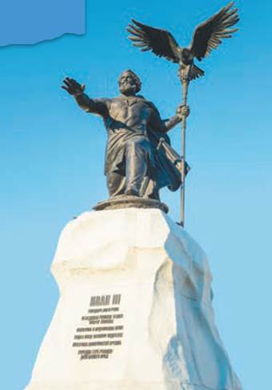
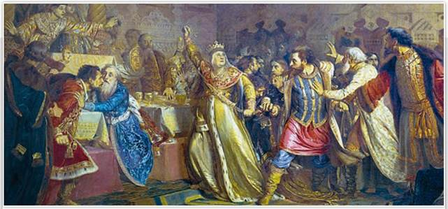
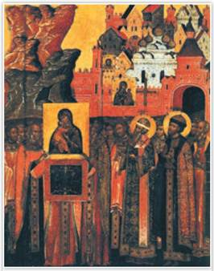
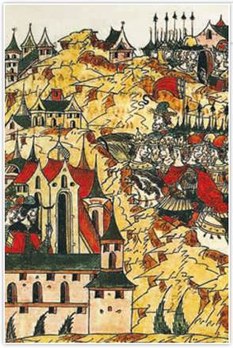
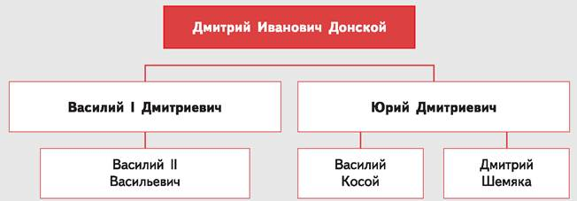
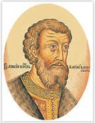
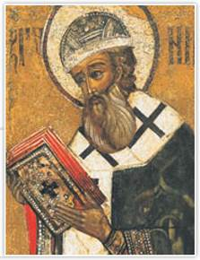

Памятник Ивану III. Скульптор А. Коробцов. 2017 г. Калуга
Является первым в России памятником Ивану III — «государю всея Руси». С установлением этого монумента историческая справедливость по отношению к великому князю-созидателю была восстановлена. Историки считают, что, по сути, Иван III был создателем того государства, наследниками которого мы все сегодня являемся. Надпись на памятнике гласит: «Государь, объединивший русские земли вокруг Москвы, покончил с ордынским игом, издал свод судебных законов, построил Московский Кремль, учредил герб России — двуглавого орла».
Как и многие страны, Русь прошла путь от раздробленности к объединению. Единство ковалось в борьбе за независимость от внешних врагов. Оно требовало преодолеть множество внутренних разногласий, найти общие интересы и идеалы. Центром собирания русских земель стала Москва. Так была создана могущественная держава — Россия.

Великая княгиня Софья Витовтовна на свадьбе великого князя Василия II Тёмного в 1433 г. срывает с князя Василия Косого пояс, принадлежавший некогда Дмитрию Донскому. Художник П. Чистяков. 1861 г. Государственный Русский музей. Санкт-Петербург
На свадьбе великого князя Василия Тёмного произошло событие, которое стало поводом к долгой и кровопролитной войне между князьями. Ссора разгорелась из-за золотого пояса, который княгиня Софья Витовтовна прилюдно сорвала со своего племянника Василия Косого.
РОССИЯ
МИР
1. Завещание Дмитрия Донского. Дмитрий Донской завещал московский престол и великое княжение Владимирское своему старшему сыну Василию 7(1389—1425), не спрашивая разрешения ордынского хана. В случае смерти Василия Дмитриевича (бездетного на момент составления завещания) его удел наследовал следующий по старшинству сын Дмитрия Донского Юрий Дмитриевич. Спустя три с половиной десятилетия этот пункт завещания станет одной из причин большой смуты в Московском княжестве.
В княжение Василия I под руку Москвы перешли Муром, Таруса, Городец, Нижний Новгород. Рязанский князь Фёдор признал Василия I «братом старейшим».
В 1391 г. Василий Дмитриевич обвенчался с единственной дочерью литовского князя Витовта Софьей.
2. Перемены в Орде. Хан Тохтамыш оказался недальновидным властителем. Он собрал Золотую Орду с помощью могущественного среднеазиатского правителя Тимура (Тамерлана), но затем отверг его опеку. И тогда воинственный Тимур нанёс Орде ощутимый удар. В 1395 г. армия Тимура опустошила города Орды. Самое страшное для ордынцев заключалось в том, что Тимур сдвинул с ордынской территории караванные пути, лишив Орду основного источника доходов от торговли.
Преследуя Тохтамыша, Тимур появился у южнорусских пределов и сжёг приграничный Елец. Над Москвой нависла угроза нападения армии Тимура. Василий I с войском двинулся на юг.
Подробнее. В эти тревожные дни из Владимира в Москву распорядились доставить икону Богоматери. Когда москвичи встречали христианскую святыню, Тимур, не дойдя до Москвы, неожиданно повернул обратно на юг, в чём люди увидели заступничество Богородицы. В память встречи («встретения») чудотворной иконы и избавления от военной угрозы в Москве был заложен Сретенский монастырь и названа улица Сретенка. На иконе «Сретение» изображено, как горожане встречают древнюю святыню. На иконе можно рассмотреть Спасские ворота Московского Кремля, пятиглавый Успенский собор.

Сретение. Икона. Государственная Третьяковская галерея. Москва

Нашествие Едигея. Миниатюра из Лицевого летописного свода. XVI в.
Правитель Литвы Витовт дал приют бежавшему из Орды Тохтамышу. Он хотел помочь побеждённому хану вернуть власть в Орде, а затем получить от него ярлык на Северо-Восточную Русь. Витовт собрал огромное войско, в котором имелись даже пушки. Большое сражение с Ордой произошло на реке Ворскле в 1399 г. Ордынская конница во главе с темником Едигёем одержала в нём решительную победу над войском Витовта и Тохтамыша.
В правление Василия I выплата дани ослабевшей Золотой Орде прекратилась. Но Едигей решил возродить мощь и влияние Орды. Ему удалось быть фактическим правителем Орды при разных ханах. В 1408 г. Едигей внезапно напал на Русь. Его отряды сожгли несколько русских городов, но захватить Москву не смогли. Простояв у стен города около месяца, Едигей взял с москвичей денежный выкуп и ушёл в степи.
3. Распад Золотой Орды. Временные успехи Орды, достигнутые усилиями Едигея, сменились новыми затяжными войнами. Сила и международное влияние Орды ушли в прошлое. Иссякли доходы от караванной торговли, которые позволяли ханам содержать огромное войско. Ставленники Тимура, а потом сыновья Тохтамыша воевали друг с другом за ханский престол. Распри привели к распаду некогда могущественной ордынской державы.
В 1441 г. из Орды выделилось Крымское ханство. В 1475 г. оно попало в зависимость от Османской империи. Тогда же турки-османы разорили богатые крымские колонии итальянского города Генуи, их жителей истребили, оставшихся в живых обратили в рабов. В 1478 г. на крымском престоле утвердился хан Менгли-Гирей.
Хан Орды Улу-Мухаммед, свергнутый с ордынского трона, вместе со своими детьми и воинами бежал на среднюю Волгу. В 1438 г. под натиском войск Улу-Мухаммеда пала Казань. Этот древний город он сделал столицей своего Казанского ханства. В 1452 г. сын Улу-Мухаммеда Касим перешёл на службу к Василию II. Тот отдал Касиму небольшой Мещёрский городок на Оке, ставший центром Касимовского ханства. Касимовские татары верно служили московским правителям.
В низовьях Волги образовалась Большая Орда, ханы которой считали себя наследниками правителей Золотой Орды. К 1502 г. Большая Орда перестала существовать, разгромленная Крымским ханством. На нижней Волге возникло Астраханское ханство. Между Уралом и Обью появилось Сибирское ханство. В степях от нижней Волги до Иртыша простиралась независимая Ногайская Орда.
4. Борьба московских князей за престол. После смерти Василия I в Московском княжестве началась затяжная междоусобная война (1425—1453). Одной из её причин был запутанный порядок престолонаследия. Поводом к усобице стало наличие двух великокняжеских завещаний — Василия I и Дмитрия Донского. Василий I оставил престол не брату Юрию, как завещал их отец Дмитрий Иванович, а своему десятилетнему сыну Василию II (1425—1462).
Юрий Дмитриевич — удельный князь звенигородский и галицкий прославился как опытный воевода, покровитель книжников, строитель храмов. В 1425 г. он не пошёл против Василия II, за спиною которого стоял его дед, могущественный Витовт, и даже присягнул юному князю.
После смерти Витовта Юрий Дмитриевич и Василий II (то есть дядя и племянник) поехали в Орду судиться о ярлыке. Хан дал ярлык юному и явно более слабому князю. Юрий смирился, но вмешался в дело случай. В 1433 г. на свадьбу Василия II почётными гостями прибыли сыновья Юрия — Василий Косой и Дмитрий Шемяка. Во время пира мать жениха Софья Витовтовна сорвала с Василия Косого золотой свадебный пояс Дмитрия Донского. По слухам, этот пояс был украден из княжеской казны. Василию Косому он якобы достался от родни со стороны жены. Но Софья сочла такой наряд гостя прямым оскорблением. Прийти на свадьбу великого князя в поясе его деда Дмитрия Донского значило подтвердить претензии Юрия Дмитриевича и его сыновей на престол.

С помощью схемы изучите родственные связи наследников Дмитрия Донского — участников московской усобицы.
Поступок Софьи Юрий счёл за оскорбление и взялся за оружие. Началась долгая междоусобная война московских князей.
Подробнее. Юрий Дмитриевич дважды изгонял племянника из Москвы. Лишь после смерти Юрия в 1434 г. московский трон вновь достался Василию II. Война московских князей продолжилась. Василию Юрьевичу Косому удалось захватить Москву, но Василий II Васильевич вернул себе престол и приказал ослепить соперника. Тогда против Василия II выступил Дмитрий Шемяка. 1445 г. на Русь напал хан Улу-Мухаммед. У Суздаля он пленил Василия II. Лишь за обещание чудовищного выкупа великого князя отпустили. С ним же на Русь пришли ханские сборщики дани, что вызвало всеобщее возмущение. В 1446 г. Дмитрий Шемяка пленил Василия II в монастыре на богомолье и ослепил его, отомстив за брата. Отсюда пошло прозвище князя — Тёмный. Теперь уже Шемяка собирал дань хану. На него негодовали, свергнутого князя-слепца жалели, а князья-соседи, используя раздор московских правителей, желали укрепить свои позиции. Но в 1447 г. при поддержке московских бояр и князя Бориса Тверского Василий Тёмный в очередной раз вернул себе престол. Борис решил, что князь-слепец будет менее опасен, чем воинственный Шемяка. Союз Москвы и Твери скрепили браком сына Василия II Ивана и тверской княжны Марии. Долгая междоусобная война потомков Дмитрия Донского завершилась.

Василий II Тёмный. Царский титулярник. 1672 г.
В ходе кровавой распри в Московском княжестве утвердился новый порядок престолонаследия — от отца к сыну.
После войны Василий Тёмный жестоко наказал сторонников Дмитрия Шемяки. Галицкий удел был ликвидирован, как и удел можайского князя. Князь суздальско-нижегородский получил Городец. Малолетний рязанский князь воспитывался в Москве, а его землёй управляли московские бояре. Безоговорочно подчинились Москве ярославские и ростовские князья. Новгород проиграл войну с Москвой и подписал Яжелбицкий мир (1456), по которому лишился возможности вести независимую внешнюю политику. Московскому князю отошло и право высшего суда в Новгороде. Новгородцы обещали принимать московских наместников. С 1460 г. наместники из Москвы постоянно пребывали и в Пскове.
Таким образом, к концу 1450-х гг. лидерство Москвы стало неоспоримо. Война показала, насколько прочны позиции Москвы как центра объединения Северо-Восточной Руси. Более четверти века московские князья воевали друг с другом, но никто не перехватил у них ярлыка на великое княжение Владимирское.
5. Флорентийская уния и автокефалия Русской православной церкви. Византийская империя страдала от натиска турок-османов, исповедовавших ислам, поэтому решилась на союз с католиками. Византийский император и константинопольский патриарх надеялись, что папа римский поднимет католиков Западной Европы на спасение их гибнувшей империи. Поэтому император Иоанн VIII вместе с высшим духовенством Константинопольской церкви и других православных церквей прибыл на церковный собор, созванный папой римским. В 1439 г. в итальянском городе Флоренции на церковном соборе была подписана Флорентийская уния (договор) о подчинении православной церкви папе римскому и признании основных догматов католичества.

Митрополит Иона. Деталь иконы. XVII в.
Иона стал первым митрополитом Киевским и всея Руси, чья кандидатура при назначении не была согласована с константинопольским патриархом. Новый порядок предусматривал избрание митрополитов Собором русских епископов с согласия московского князя.
Русскую церковь на Флорентийском соборе представлял митрополит Исидор из греков. Он подписал унию, но Василий II и русское духовенство её не признали. Исидор, въехавший в Москву как папский кардинал, был низложен. В 1448 г. церковный собор русских архиереев избрал рязанского епископа Иону митрополитом всея Руси.
Так Русская православная церковь отвергла Флорентийскую унию и стала автокефальной (независимой), хотя продолжала быть частью Константинопольского патриархата. У великих московских князей появилась возможность использовать церковь в своих политических целях.
Католическая Европа не оказала действенной помощи Византии, и в 1453 г. турецкий султан Мехмед Завоеватель покорил Константинополь. Поражение Византии православные христиане трактовали как Божье наказание за сговор во Флоренции.
ТОЧКА ЗРЕНИЯ
Из книги историка С. Платонова
«Полный курс лекций по русской истории»
В Москве решились отделиться от Константинопольского патриархата, который предал православие... и впредь самим ставить себе митрополита по избранию собора русских архиереев. Новым порядком и был поставлен в митрополиты московские рязанский епископ.
1. О каком «предательстве» идёт речь в тексте?
2. Каким термином принято называть описанное историком событие?
ПОДВЕДЁМ ИТОГИ
В XV в. распалась Золотая Орда, на территории которой возникло несколько новых государств. В Московском княжестве разгорелась междоусобная война, победу в ней одержал Василий II. Московское княжество продолжало укрепляться как политический и религиозный центр русских земель.
Вопросы и задания
Работаем с хронологией
Определите хронологическую последовательность событий:
Работаем с источником
Прочитайте отрывок из сочинения историка В. Ключевского и ответьте на вопросы.
Начав княжение чуть не ребёнком, [он] совсем не годился для боевой роли, какая ему была суждена. Не раз побитый, ограбленный и заточённый, наконец, ослеплённый, он, однако, вышел из девятнадцатилетней борьбы с приобретениями, которые далеко оставили за собою всё, что заработали продолжительными усилиями его отец и дед.
Работаем с понятиями
Объясните значение понятия «автокефалия».
ДОПОЛНИТЕЛЬНЫЕ МАТЕРИАЛЫ
«УЧИТЕЛЮ И УЧЕНИКУ».
Материалы к параграфу на портале «История.РФ».